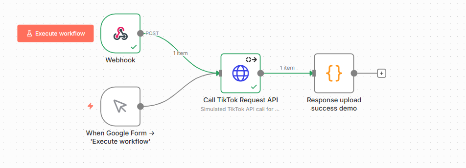

N8N Auto TikTok Poster
An internal automation that uploads and publishes product showcase videos to a TikTok Business Account using n8n and TikTok Content Posting API.
How it works
- Receive product input (Google Form)
- Generate video via AI or script
- Upload and publish via TikTok Content Posting API

Demo
See the review video demonstrating the full end-to-end flow.
Contact
peerapat.skt@gmail.com
Privacy Policy | Terms of Service